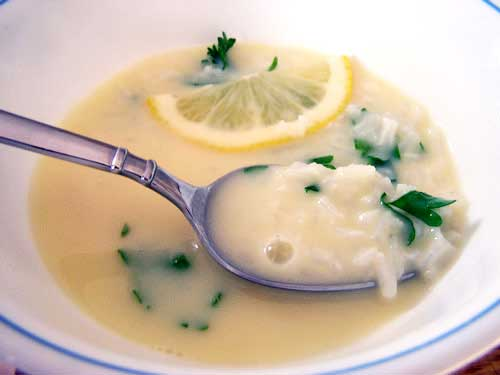

Greek Lemon Soup
Ingredients
Servings: 10
- 8 Cups homemade chicken stock
- 1 Teaspoon salt, or to taste
- 3 Tablespoons cornstarch
- 3/4 Cup fresh lemon juice, (4 lemons)
- 2 Cups uncooked orzo, (rice-shaped pasta)
- 1/4 Teaspoon freshly fround black pepper
- 4 Large eggs
Directions
- Step 1. In a large saucepan, bring 6 cups stock to a boil. Add orzo; cook until al dente, 10 minutes. Add salt and pepper.
- Step 2. Dissolve cornstarch in 1/2 cup water. Heat remaining 2 cups stock until hot, do not boil.
- Step 3. In an electric mixer, beat eggs with whisk until fluffy, add cornstarch mixture and lemon juice. With mixer on medium-low speed, slowly add 1 to 2 cups hot stock until incorporated and mixture thickens slightly. Add any remaining stock to orzo.
- Step 4. Over low heat, slowly add egg mixture to orzo, stirring constantly until thickened and creamy. Do not let it come to a boil; eggs will curdle. Serve immediately.